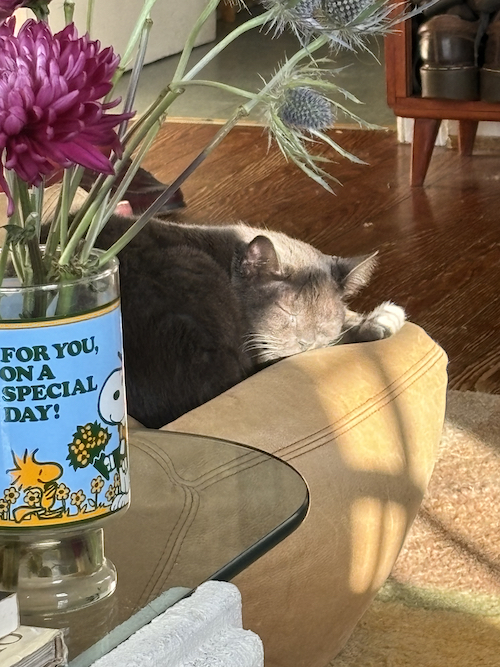

September!!
- Periodically remember I'm pretty good at air hockey.
- Boulder --> Sand --> Button --> Pasta
- He ignored me up until yesterday which is when he introduced himself.
- "Love is a many splendored thing / When your heart is ready / You may hear it sing / Love is a many splendored thing"
- "I don't have anymore stupid questions... guinea pigging... zotero is easy enough for me to use"
- mini ghirardelli milk chocolate carmel square wrapper; wasp; digital product shops
- Developing a raffle ethos. "It's harder to find a raffle than it is to win one."
- What in me shunts and is shutted
- Learned about Rammellzee last night and I'm obsessed. I feel so inspired. The quotes below are from: 'Culture is the Most Fertilized Substance' — Edit DeAk speaks to Rammellzee, Artforum, May 1983
- "Language itself is a gamble. A roll of dice. The way you formulate your sentence,
the words you pick and make that sentence, is the roll of the dice. That’s why I’m a rapper,
I pick the best words for the sentence. If your gamble rolls right, you’ll win.
Where the dictionary rolls, the word’s right. When the title was made, Ornamental Style,
well that word was one roll or one knowledge straight off armament.
The next roll that came up was armament. And that’s what graffiti is."
- “The trains out there are a big book, and as the pages are being written, as formations are being placed on the train,
the page cars are switched around. And the book is scattered and rescattered into a gamble. The letters armored themselves
while we were scattering them on the transit. And society was still playing that big major game by breaking up car numbers in sequence.
When you put two cars together it makes an ionic sentence. A one-word statement of a sentence, full of five of these one-word joints.
And these sentences started to make sense.”
- “The rhyme cannot be repeated because I just put words in formation as letters in the word formations, how you gonna tell me to repeat it.
All my rhymes, every rhyme I ever say is never repeated. That is what makes me the Zee and that is a title. I do not repeat anything and I never write it down.”
- “Ikonoklast is when you are a symbol destroyer. Turning words around and saying them backwards and doing rhymes to them, most people don’t know that a rhyme is just like a song.
The only difference is in the song you use your voice in a pretty way and with rhyme you just say it, you talk it, you may give a little technology to it, a little saying to it,
a little echo to it. Everything is a remanipulation, ain’t nothing created. Everything is taken from here, taken from there, ideas sprayed, skipped, dipped, dyed, you know,
it’s all been redone. We shorten the word, we take the letters away from the word, and we just bust it down..."
- dispersal/diffusion -- products concentrated and then disseminated, from one staging area to the next
|
|
 |
 |
|
|
|
|
|